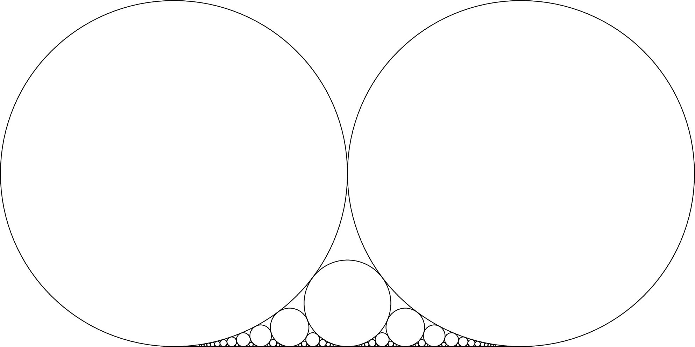
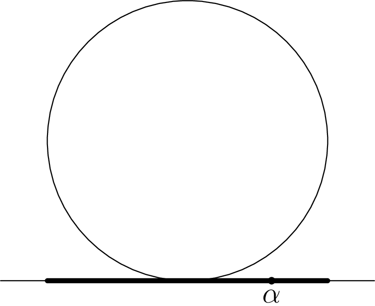
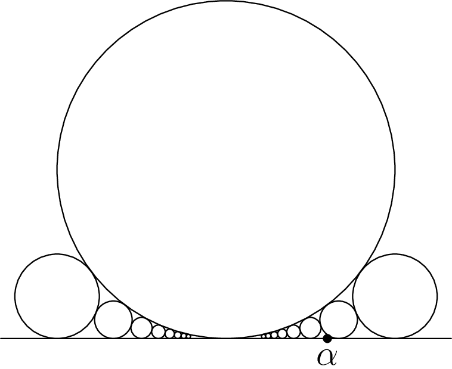

December 25th
Today I learned the proof for the relationship between Ford circles and kissing fractions. The simplest way to talk about this is to actually give the radius of the circles. On the number line, we assign reduced fractions $\frac ab$ a circle of radius $\frac1{2b^2}$ above it. Then this is what happens.
Let's prove what we're seeing. Namely, no two circles overlap more than being tangent, and two circles are tangent if and only if they're fractions $\frac ab$ and $\frac cd$ are Farey neighbors. (That is, $ad-bc=\pm1.$) Well, overlapping can be tested by comparing the distance between centers to the sum of the radii. By construction, circles are centered at $\left(\frac ab,\frac1{2b^2}\right)$ with radius $\frac1{2b^2},$ so we are interested in showing\[\sqrt{\left(\frac ab-\frac cd\right)^2+\left(\frac1{2b^2}-\frac1{2d^2}\right)}\ge\frac1{2b^2}+\frac1{2d^2}\]with equality if and only if $ad-bc=\pm1.$ Clearing denominators somewhat, we are interested in showing\[\sqrt{(ad-bc)^2+\frac14\left(\left(\frac bd\right)^2-\left(\frac db\right)^2\right)}\ge\frac12\left(\left(\frac bd\right)^2+\left(\frac db\right)^2\right).\]Let $\left(\frac bd\right)^2=q$ for brevity. We may square and preserve the equivalence because everything involved is positive. So we want\[(ad-bc)^2+\frac14\left(q-q^{-1}\right)^2\ge\frac14\left(q+q^{-1}\right)^2.\]Expanding the $\left(q\pm q^{-1}\right)^2=q^2+q^{-2}\pm2$ will make the $q$ disappear. We're left with this being equivalent to\[(ad-bc)^2\ge1,\]which is what we wanted.
As a quick aside, this implies that if $\frac ab$ and $\frac cd$ have tangent Ford circles, then $\frac{a+c}{b+d}$ has a circle tangent to both of those. Indeed, we have that\[a(b+d)-b(a+c)=(a+c)d-(b+d)c=ad-bc=\pm1.\]In light of the above work, this is sufficient.
What caught my eye yesterday is that the circles give a very visual way to approach the Dirichlet approximation theorem. Namely, for irrational $\alpha,$ we want to show that there are infinitel many rationals $\frac ab$ such that\[\left|\alpha-\frac ab\right| \lt \frac1{2b^2}.\]This is stronger than the typical Dirichlet approximation theorem, but we can still do it. (This is the stronger continued fraction bound.) In terms of Ford circles, the radius of the circle for $\frac ab$ is exactly $\frac1{2b^2},$ so the conclusion is really saying that $\alpha$ lives below the "shadow'' of the circle of $\frac ab.$
With this in mind, we prove the result inductively. We show that our $\alpha$ is below an infinite sequence of increasingly smaller but tangent circles. Certainly $\alpha$ is under some circle. If $\{\alpha\} \lt \frac12,$ then $\floor\alpha/1$ is off by less than $\frac12$; else $\ceil\alpha/1$ works.
Now once $\alpha$ is below one circle, it should be below one of the circles below its current circle.
Visually, we can see that the bottom circles cover the entire shadow of the bigger circle, which is our inductive step, for this implies that $\alpha$ lies in the shadow of another (smaller) circle.
More formally, fix the big circle to be $\frac ab,$ reduced. Without loss of generality, $\alpha \gt \frac ab.$ By B\'ezout's lemma, there exists some $c_0$ and $d_0$ such that\[ad_0-bc_0=-1,\]so certainly some circle is tangent to $\frac ab.$ This is equivalent to $\frac{c_0}{d_0}-\frac ab=\frac1{bd_0},$ so in fact there is some circle tangent to $\frac ab$ to its right. Even further, $c=c_0+ak$ and $d=d_0+bk$ gives an infinite family with arbitrary small denominator. Letting $k$ be negative will give a smallest positive $D$ which will be strictly smaller than $b,$ corresponding to a larger circle than $\frac ab,$ and here\[\frac CD-\frac ab=\frac1{bD} \gt \frac1{2b^2}\]is outside of the shadow of $\frac ab.$ In particular, $\frac CD \gt \alpha.$
Now suppose for the sake of contradiction that $\alpha$ is not covered. If there's a gap above $\alpha,$ then the let the bigger circle on one side of $\alpha$ be $\frac cd.$ Explicitly, $\frac cd$ is the fraction with largest denominator larger than $\alpha$ which is tangent to $\frac ab$; the $\frac CD$ forces at least one to exist. The killing blow is to look at the circle belonging to the mediant\[\frac{a+c}{b+d}.\]This fraction is larger than and tangent to $\frac ab$ but has larger denominator than $\frac cd,$ so it has to live on the other side of $\alpha.$ In particular, the vertical line above $\alpha$ divides the circles belonging to $\frac cd$ and $\frac{a+c}{b+d}.$ Note this isn't a vertical tangent because the circles have different $y$ coordinates (because they have different radii), so these circles can't intersect at all. However, we already established that $\frac{a+c}{b+d}$ is tangent to $\frac cd,$ so we have a contradiction.